4 可視化2
箱ひげ図・散布図・折れ線グラフ
今日の目標
- 箱ひげ図（
geom_boxplot()）を描けるようになる。 - 散布図（
geom_point()）を描けるようになる。 - 折れ線グラフ（
geom_line()）を描けるようになる。
4.1 パッケージの準備
大学のPCはシャットダウンする度に初期化されるため、毎回インストールが必要です。 毎回授業開始時にこのブロックを実行してください。
必要なパッケージを読み込みます。 折れ線グラフの演習では gapminder パッケージを使います。
gapminder パッケージとは
世界各国の経済・健康データをまとめたデータセットです。
| 変数名 | 内容 | 型 |
|---|---|---|
country |
国名 | 文字列（離散） |
continent |
大陸名 | 文字列（離散） |
year |
年（1952〜2007、5年刻み） | 数値（離散） |
lifeExp |
平均寿命（年） | 数値（連続） |
pop |
人口 | 数値（連続） |
gdpPercap |
一人当たり GDP（ドル） | 数値（連続） |
4.2 今回使うデータ
mpg データ（箱ひげ図・散布図）
前回と同じく ggplot2 付属の自動車燃費データを使います。
Rows: 234
Columns: 11
$ manufacturer <chr> "audi", "audi", "audi", "audi", "audi", "audi", "audi", "…
$ model <chr> "a4", "a4", "a4", "a4", "a4", "a4", "a4", "a4 quattro", "…
$ displ <dbl> 1.8, 1.8, 2.0, 2.0, 2.8, 2.8, 3.1, 1.8, 1.8, 2.0, 2.0, 2.…
$ year <int> 1999, 1999, 2008, 2008, 1999, 1999, 2008, 1999, 1999, 200…
$ cyl <int> 4, 4, 4, 4, 6, 6, 6, 4, 4, 4, 4, 6, 6, 6, 6, 6, 6, 8, 8, …
$ trans <chr> "auto(l5)", "manual(m5)", "manual(m6)", "auto(av)", "auto…
$ drv <chr> "f", "f", "f", "f", "f", "f", "f", "4", "4", "4", "4", "4…
$ cty <int> 18, 21, 20, 21, 16, 18, 18, 18, 16, 20, 19, 15, 17, 17, 1…
$ hwy <int> 29, 29, 31, 30, 26, 26, 27, 26, 25, 28, 27, 25, 25, 25, 2…
$ fl <chr> "p", "p", "p", "p", "p", "p", "p", "p", "p", "p", "p", "p…
$ class <chr> "compact", "compact", "compact", "compact", "compact", "c…gapminder データ（折れ線グラフ）
世界各国の経済・人口・平均寿命データです。
Rows: 1,704
Columns: 6
$ country <fct> "Afghanistan", "Afghanistan", "Afghanistan", "Afghanistan", …
$ continent <fct> Asia, Asia, Asia, Asia, Asia, Asia, Asia, Asia, Asia, Asia, …
$ year <int> 1952, 1957, 1962, 1967, 1972, 1977, 1982, 1987, 1992, 1997, …
$ lifeExp <dbl> 28.801, 30.332, 31.997, 34.020, 36.088, 38.438, 39.854, 40.8…
$ pop <int> 8425333, 9240934, 10267083, 11537966, 13079460, 14880372, 12…
$ gdpPercap <dbl> 779.4453, 820.8530, 853.1007, 836.1971, 739.9811, 786.1134, …4.3 箱ひげ図
箱ひげ図とは
箱ひげ図（boxplot）は連続変数の分布を視覚的に要約する方法です。 特定のグループごとに「分布の形」を比較するのが得意です。
参考：
なるほど統計学園（総務省）
箱ひげ図で読める情報
| 要素 | 意味 |
|---|---|
| 箱の下辺（第1四分位数 Q1） | データの下位25%の境界 |
| 箱の中央線（第2四分位数 Q2 = 中央値） | データの真ん中の値 |
| 箱の上辺（第3四分位数 Q3） | データの上位25%の境界 |
| ひげの上端 | Q3 + 1.5 × IQR（四分位範囲）以内の最大値 |
| ひげの下端 | Q1 − 1.5 × IQR 以内の最小値 |
| 点（●） | 外れ値（ひげの外側にある観測値） |
ヒストグラム vs 箱ひげ図
| ヒストグラム | 箱ひげ図 | |
|---|---|---|
| 得意なこと | 分布の「形」（山の位置・歪み）を把握 | 複数グループの分布を1つのグラフで比較 |
| グループ比較 | facet_wrap() で分割が必要 |
1つのグラフ内でグループを並べられる |
| 記述統計 | 直接は読めない | 中央値・四分位数がひと目でわかる |
geom_boxplot() の基本
geom_boxplot() は x にカテゴリ変数、y に連続変数を指定します。
ラベルを整える
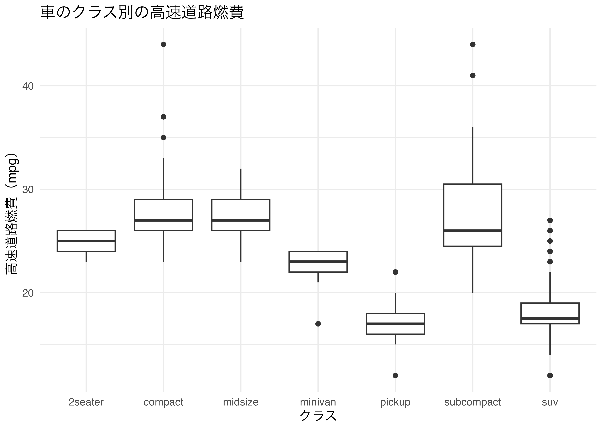
色を変える
fill で箱の塗りつぶし色を変える
- 1
-
fillで箱の色、colorでひげ・輪郭の色を指定
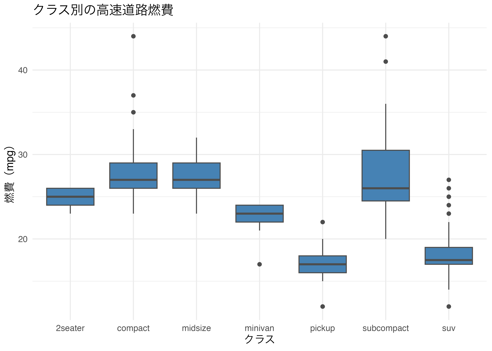
fill に変数をマッピングしてカテゴリごとに色を変える
- 1
-
aes()の中にfill = classを書くと、クラスごとに自動的に色が変わる
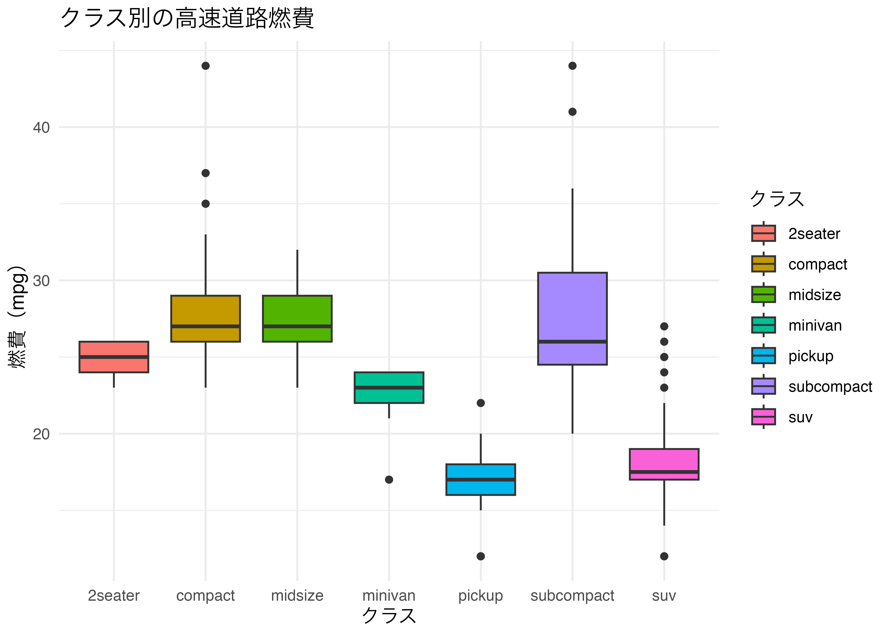
グループ別の箱ひげ図
x に一つのカテゴリ変数、fill に別のカテゴリ変数を指定すると、 グループ別に色分けした箱ひげ図が描けます。
- 1
-
fill = drvで駆動方式ごとに色分け。箱が自動的にグループ別に並ぶ
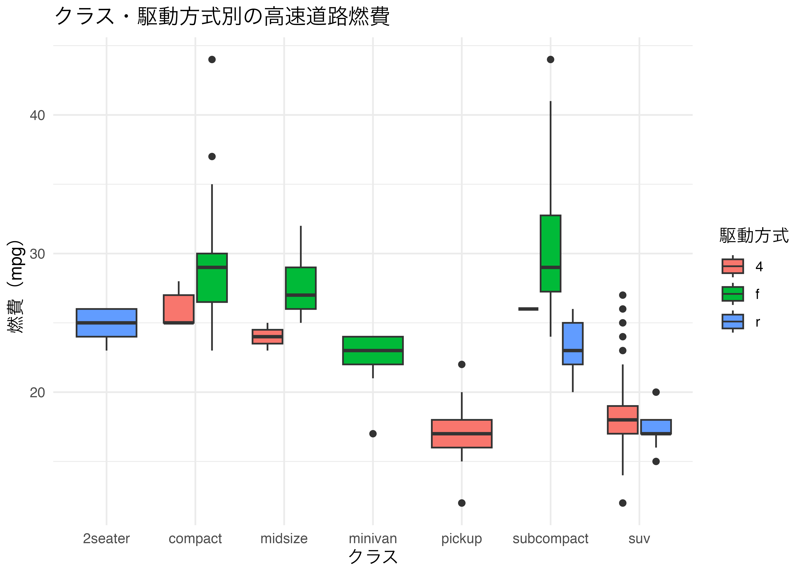
横向き箱ひげ図
カテゴリ名が長い場合や箱を見やすくしたい場合は、coord_flip() で横向きにします。
- 1
-
reorder(class, hwy, median)で中央値の大きさ順にクラスを並べ替える - 2
-
coord_flip()で X 軸と Y 軸を入れ替える - 3
- 軸ラベルと凡例の情報が重複するので凡例を非表示にする
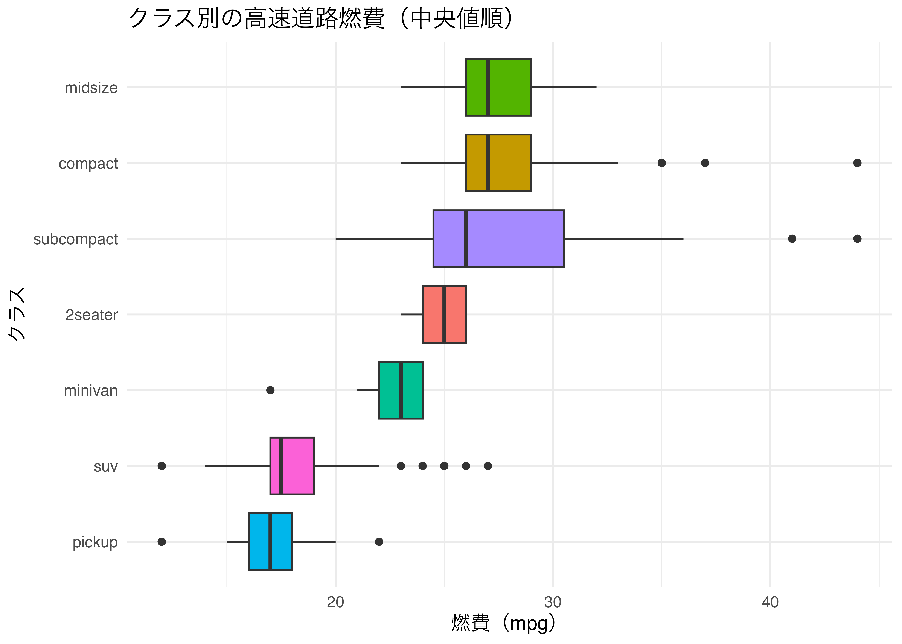
透過率と外れ値
alpha で透過率を設定する
- 1
-
alpha = 0.7で透過率 70%（1 = 不透明、0 = 完全透明） - 2
-
outlier.colorで外れ値の点の色を変える - 3
-
outlier.sizeで外れ値の点の大きさを変える
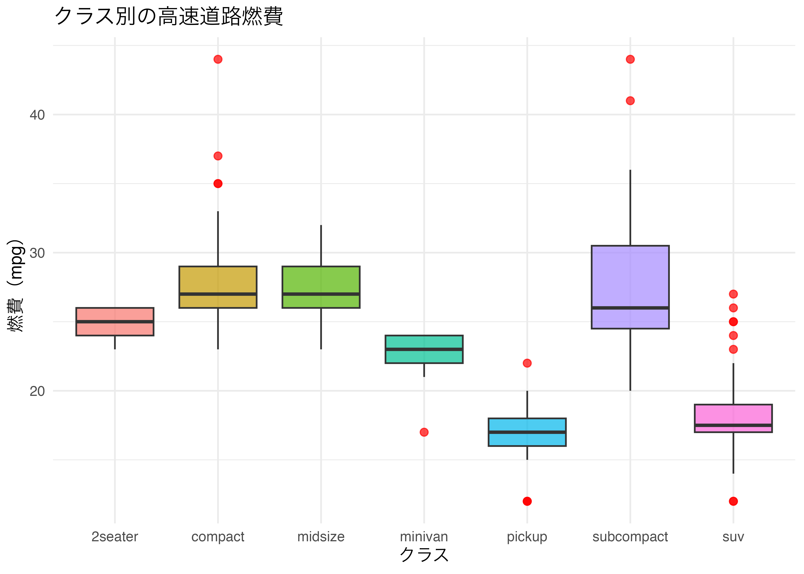
ファセット分割
facet_wrap() で変数ごとにパネルを分割できます。
- 1
-
facet_wrap(~ cyl)でシリンダー数別にパネル分割 - 2
- X 軸ラベルを 45 度傾けて重ならないようにする
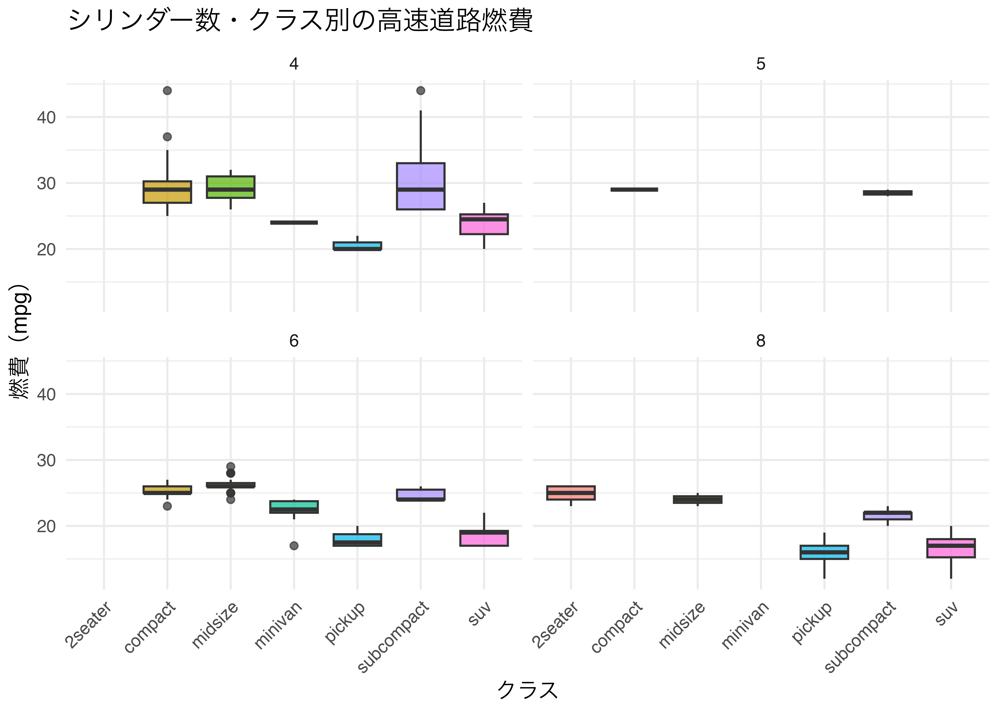
4.4 散布図
散布図とは
散布図（scatter plot）は 2 つの連続変数の間の関係（相関）を視覚的に確認するグラフです。 各データ点が 2 次元平面上の点として描かれます。
| 幾何オブジェクト | 意味 |
|---|---|
ggplot() |
図を描くキャンバスを用意する |
geom_point() |
散布図を描く |
因果関係と相関関係
散布図を描く際、X 軸と Y 軸の変数の設定が重要です。
- 原因と考えられる変数 → X 軸（例：エンジン排気量）
- 結果と考えられる変数 → Y 軸（例：燃費）
ただし、散布図で見えるのは「相関関係」であり、「因果関係」ではありません。 2 つの変数に強い相関があっても、必ずしも一方が他方の原因とは限りません。
geom_point() の基本
geom_point() は x と y の両方に連続変数を指定します。
aes(x = displ, y = hwy) と書くだけで、各車の排気量と燃費の関係が点で表示されます。
ラベルを整える
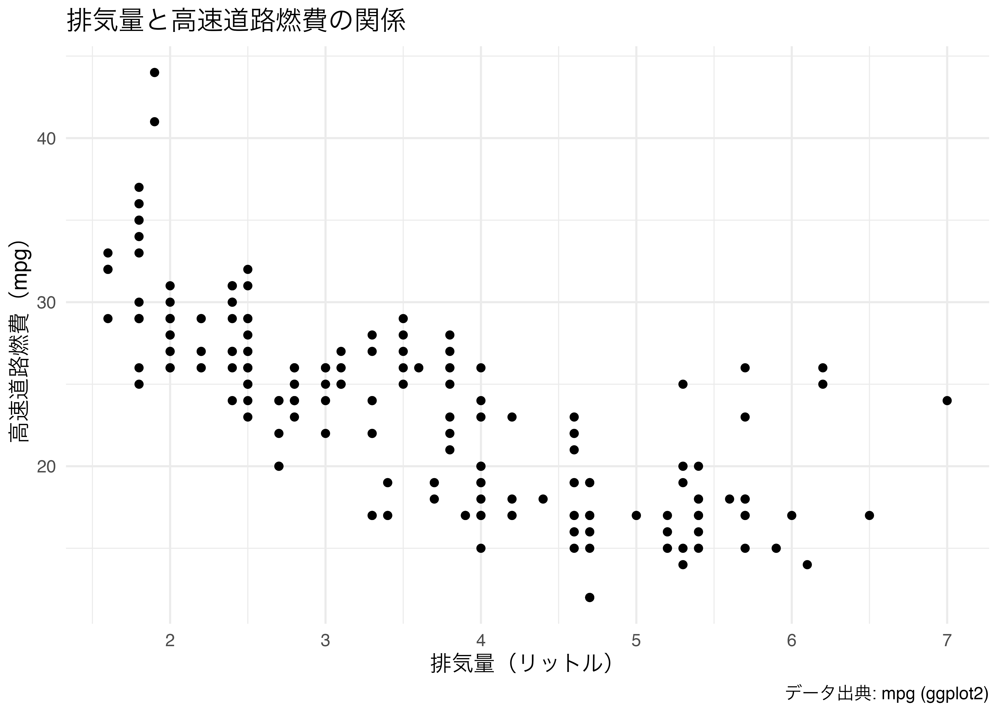
色・サイズをマッピングする
aes() の中で変数を色やサイズにマッピングすると、追加の情報を同じグラフで表現できます。
color で色を変数にマッピングする
- 1
-
color = drvで駆動方式ごとに点の色が変わる
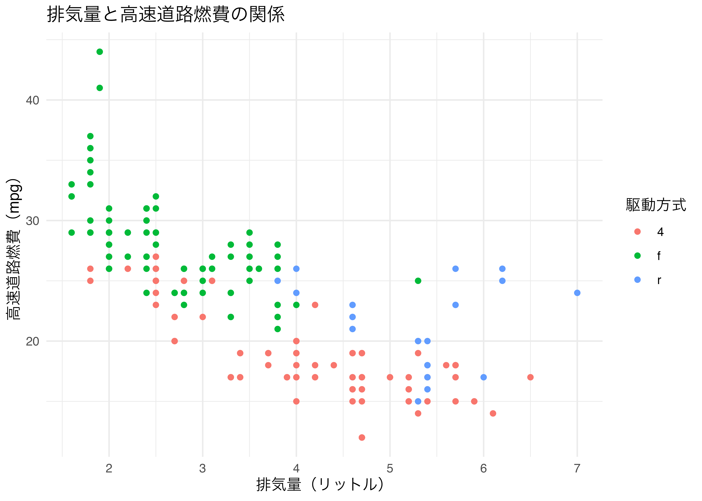
size でサイズを変数にマッピングする
- 1
-
size = cylでシリンダー数が大きいほど点が大きくなる - 2
-
点が重なる部分は
alphaで透明にすると見やすくなる
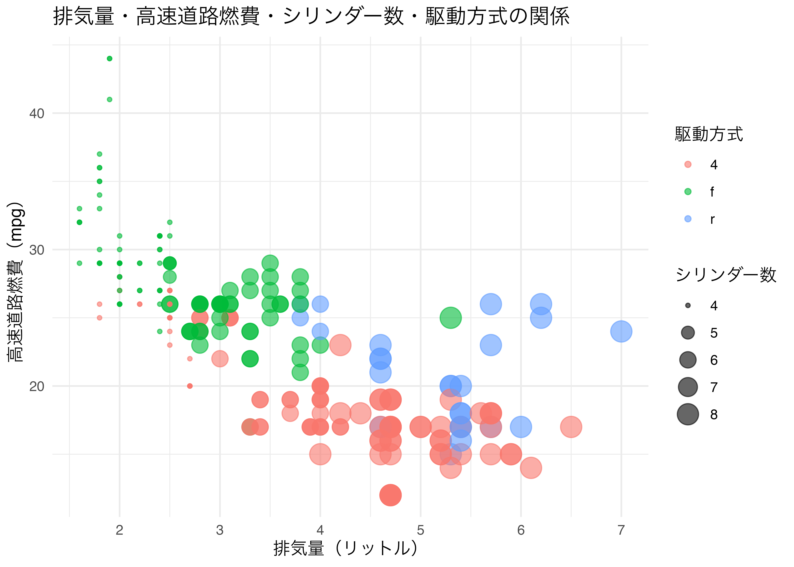
color と fill の使い分け（点の場合）
geom_point() の点は「面積」を持たないため、通常は color を使います。
| 図形 | 使うもの |
|---|---|
| 点（散布図） | color（点の色） |
| 棒・箱（棒グラフ・箱ひげ図） | fill（塗りつぶし）と color（輪郭） |
重なりを解消する（jitter）
データが重なって見えにくい場合、geom_jitter() で点をランダムにずらすことができます。
ggplot(data = mpg, aes(x = drv, y = hwy)) +
geom_point() +
labs(title = "geom_point()", x = "駆動方式", y = "燃費（mpg）") +
theme_minimal()
ggplot(data = mpg, aes(x = drv, y = hwy)) +
geom_jitter(width = 0.2, height = 0, alpha = 0.6) +
labs(title = "geom_jitter()", x = "駆動方式", y = "燃費（mpg）") +
theme_minimal()- 1
-
widthで横方向のずらし幅、heightで縦方向のずらし幅を指定
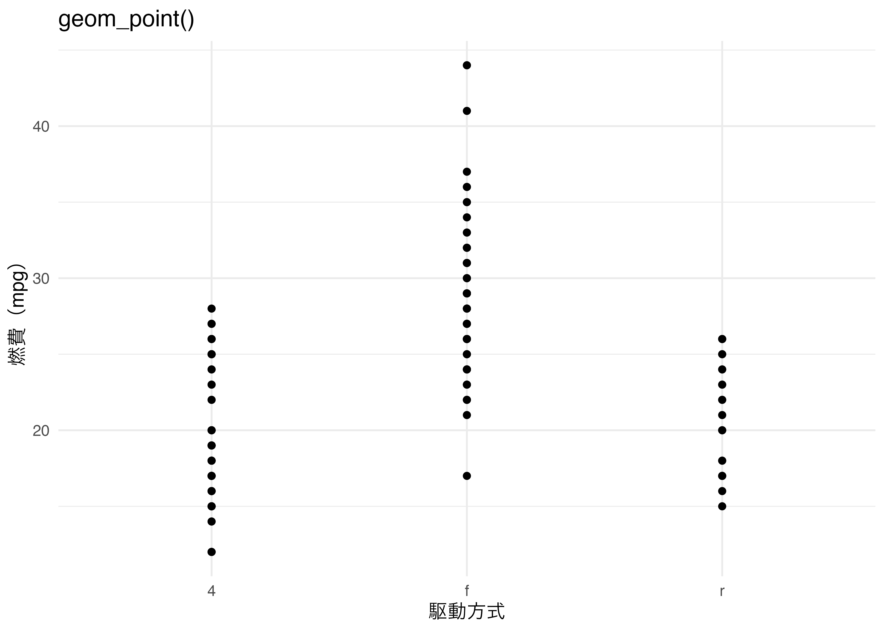
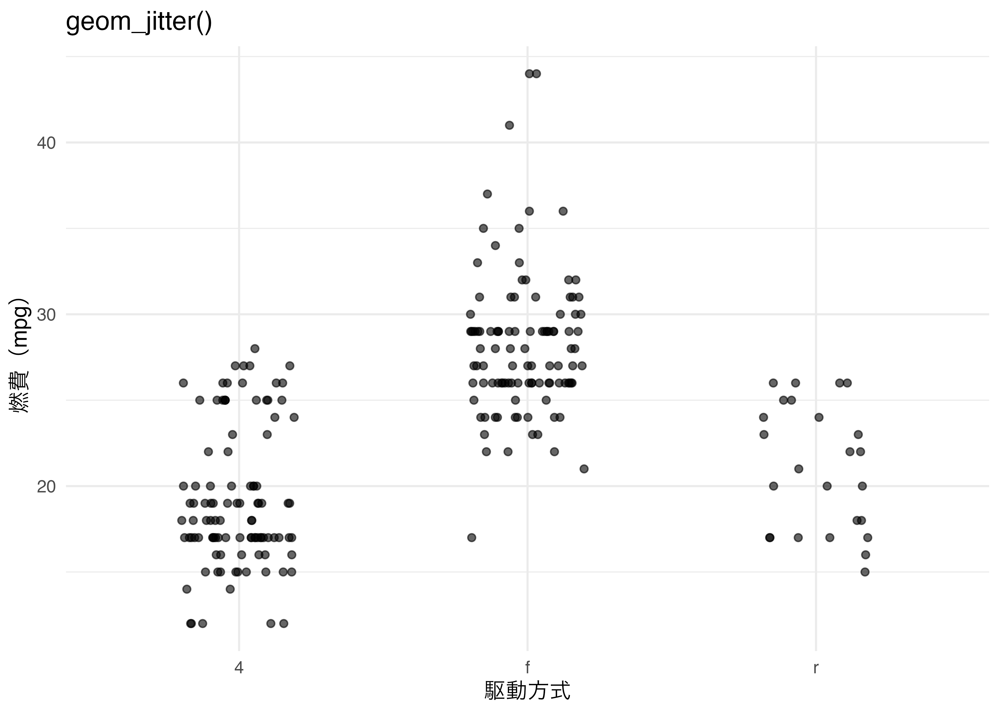
jitter を使って点の重なりを解消
回帰直線を追加する（geom_smooth()）
散布図に回帰直線（トレンドライン）を追加するには geom_smooth() を使います。
- 1
-
method = "lm"で線形回帰（直線）を使う - 2
-
se = TRUE（デフォルト）で 95% 信頼区間を薄い帯で表示 - 3
-
colorで直線の色を指定
`geom_smooth()` using formula = 'y ~ x'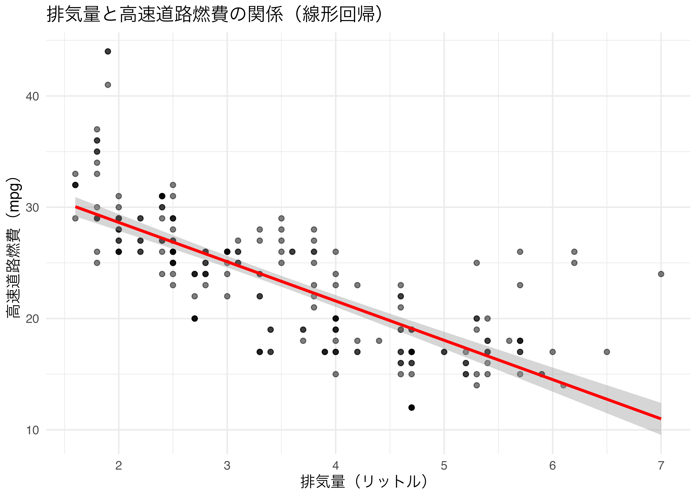
グループごとに回帰直線を追加する
- 1
-
aes()でcolor = drvを設定すると、geom_smooth()もグループ別に適用される - 2
-
se = FALSEで信頼区間の帯を非表示にするとすっきりする
`geom_smooth()` using formula = 'y ~ x'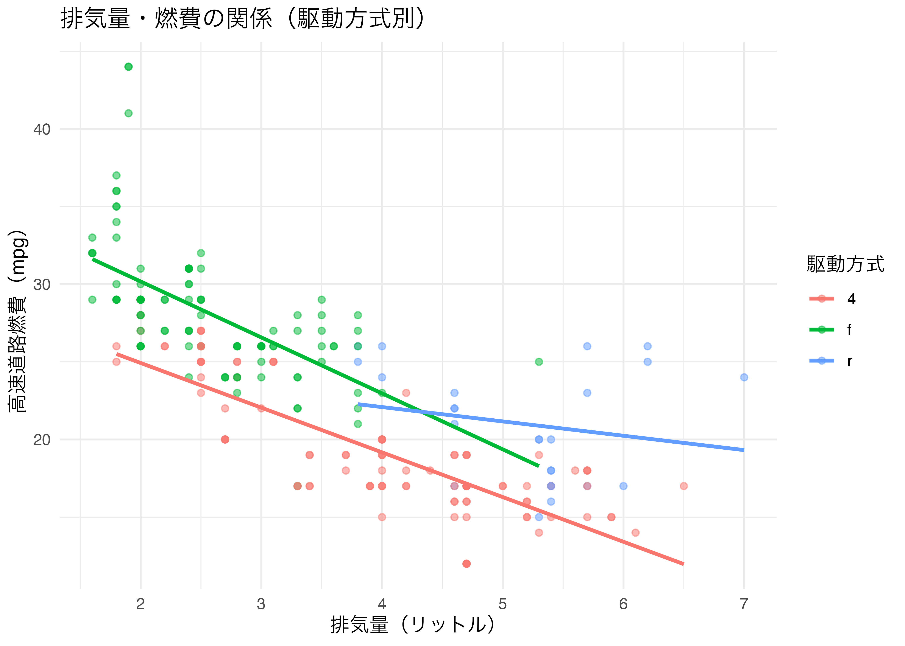
geom_smooth() の method 引数
| 値 | 手法 | 用途 |
|---|---|---|
"lm" |
線形回帰 | 直線的な関係 |
"loess" |
LOESS（局所回帰） | デフォルト。曲線的な関係 |
"glm" |
一般化線形モデル | ロジスティック回帰など |
データ数が少ないときは "loess" でも十分ですが、 「直線的な傾向を見たい」ときは method = "lm" を使うのが一般的です。
ファセット分割
ggplot(data = mpg, aes(x = displ, y = hwy)) +
geom_point(alpha = 0.5, color = "steelblue") +
geom_smooth(method = "lm", se = FALSE, color = "red") +
facet_wrap(~ drv, labeller = labeller(drv = c("4" = "4WD", "f" = "前輪", "r" = "後輪"))) +
labs(
title = "排気量と高速道路燃費の関係（駆動方式別）",
x = "排気量（リットル）",
y = "高速道路燃費（mpg）"
) +
theme_minimal()- 1
-
labellerでパネルのラベルを変更できる
`geom_smooth()` using formula = 'y ~ x'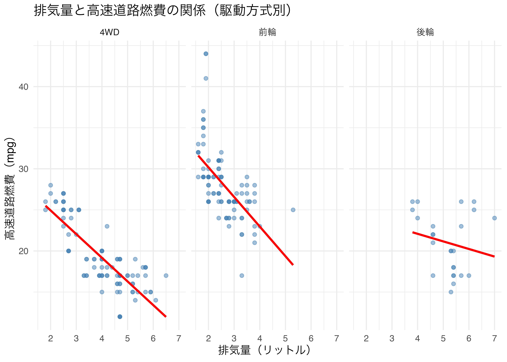
4.5 折れ線グラフ
折れ線グラフとは
折れ線グラフはある変数の時系列的な変化を示す際に使われます。 横軸は時間（年・月・日など）、縦軸は値（人口・気温・株価など）です。
| 幾何オブジェクト | 意味 |
|---|---|
ggplot() |
図を描くキャンバスを用意する |
geom_line() |
折れ線グラフを描く |
折れ線グラフの横軸データについての注意点
- 横軸上の値はグループ内において 1 回だけ登場する
- 例）総選挙が実施された年の場合、「1996」はデータでは 1 回だけ登場する
- 横軸が連続変数でも離散変数でも使えるが、順序付きである必要がある
複数の線を描く場合は、color や group でグループを指定します。
データの確認
gapminder データから日本のデータを確認します。
# A tibble: 12 × 6
country continent year lifeExp pop gdpPercap
<fct> <fct> <int> <dbl> <int> <dbl>
1 Japan Asia 1952 63.0 86459025 3217.
2 Japan Asia 1957 65.5 91563009 4318.
3 Japan Asia 1962 68.7 95831757 6577.
4 Japan Asia 1967 71.4 100825279 9848.
5 Japan Asia 1972 73.4 107188273 14779.
6 Japan Asia 1977 75.4 113872473 16610.
7 Japan Asia 1982 77.1 118454974 19384.
8 Japan Asia 1987 78.7 122091325 22376.
9 Japan Asia 1992 79.4 124329269 26825.
10 Japan Asia 1997 80.7 125956499 28817.
11 Japan Asia 2002 82 127065841 28605.
12 Japan Asia 2007 82.6 127467972 31656.geom_line() の基本（1 カ国）
まず、日本の平均寿命の推移を折れ線グラフで描きます。
- 1
-
filter()で日本のデータのみ抽出 - 2
-
パイプ
|>からggplot()に渡す場合、data =は省略できる
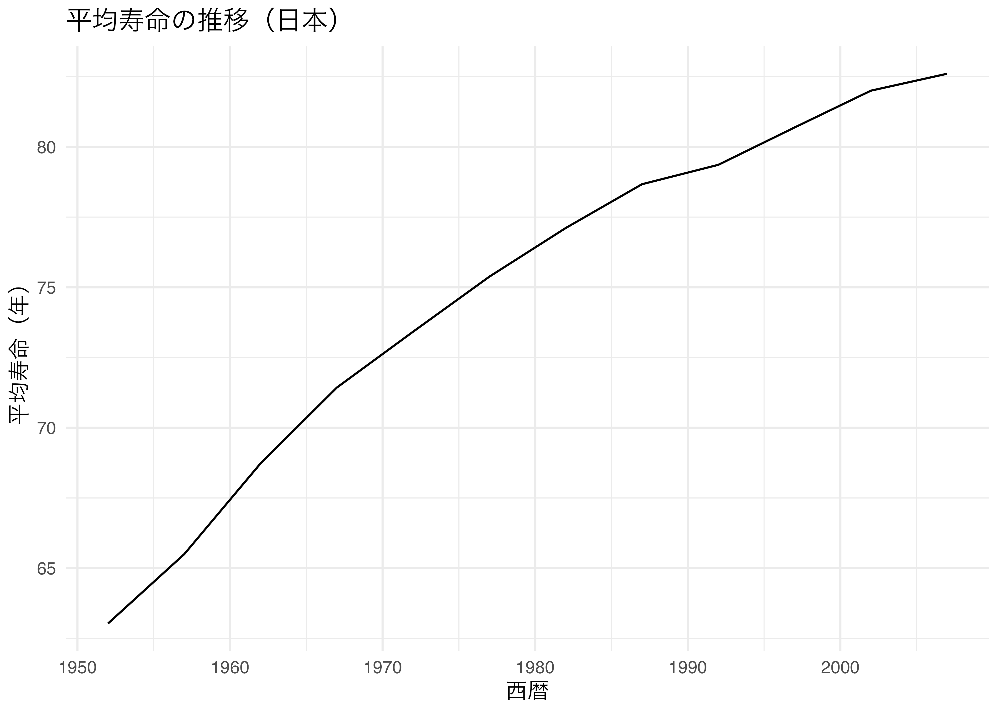
点と線を組み合わせる
折れ線グラフに geom_point() を重ねると、各データ点が強調されます。
- 1
-
linewidthで線の太さを指定 - 2
-
sizeで点の大きさを指定
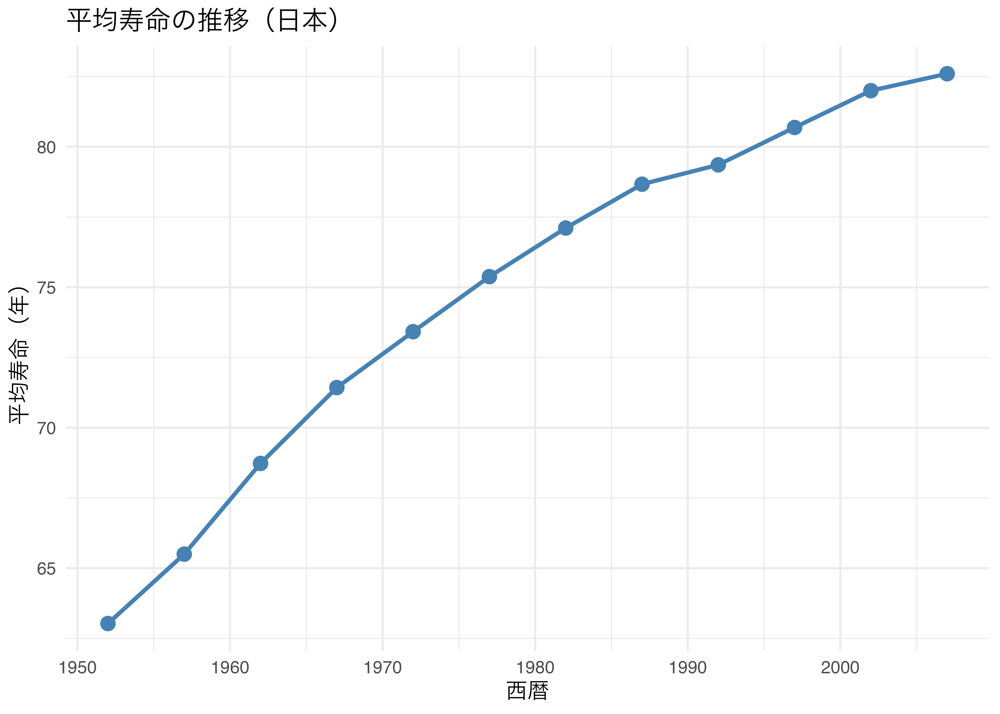
複数のグループを描く
複数の国の推移を 1 つのグラフに描くには、 color または group にグループ変数を指定します。
日本・中国・韓国の平均寿命の比較
# 東アジア3カ国を抽出
east_asia <- gapminder |>
filter(country %in% c("Japan", "China", "Korea, Rep."))
ggplot(data = east_asia, aes(x = year, y = lifeExp, color = country)) +
geom_line(linewidth = 1) +
geom_point(size = 2) +
labs(
title = "東アジア3カ国の平均寿命の推移",
x = "西暦",
y = "平均寿命（年）",
color = "国名"
) +
theme_minimal()- 1
-
%in%で複数の値を一度に指定できる（==の複数版） - 2
-
color = countryで国ごとに線の色が変わる
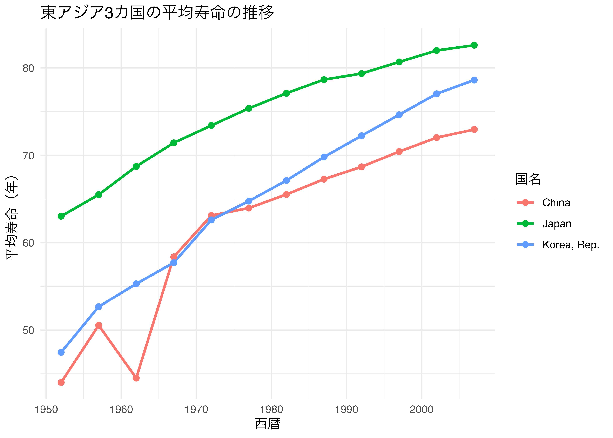
大陸別の比較
各大陸の平均的な平均寿命の変化を見てみましょう。
gapminder |>
group_by(continent, year) |>
summarise(mean_lifeExp = mean(lifeExp), .groups = "drop") |>
ggplot(aes(x = year, y = mean_lifeExp, color = continent)) +
geom_line(linewidth = 1) +
geom_point(size = 2) +
labs(
title = "大陸別の平均寿命の推移（平均値）",
x = "西暦",
y = "平均寿命（年）",
color = "大陸"
) +
theme_minimal()- 1
-
group_by(continent, year)で大陸×年ごとにグループ化 - 2
-
summarise()で各グループの平均値を計算
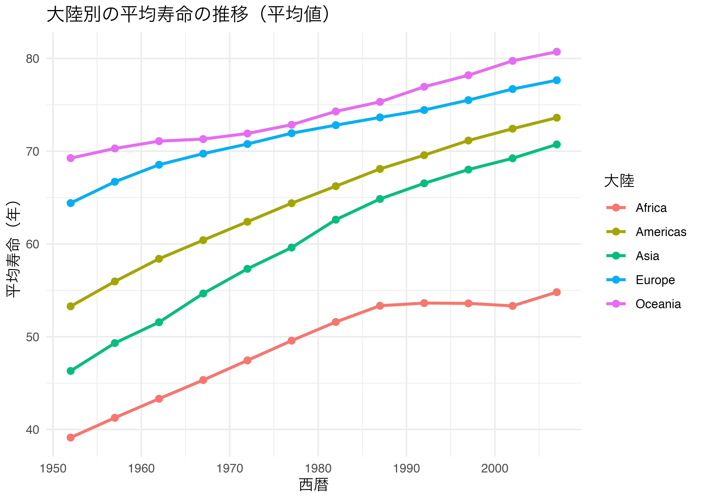
ファセット分割
大陸別に分割して表示することで、各大陸内の国のばらつきも確認できます。
- 1
-
group = countryで国ごとに 1 本の線を描く（colorを使わないときに必要） - 2
-
facet_wrap(~ continent)で大陸別にパネル分割
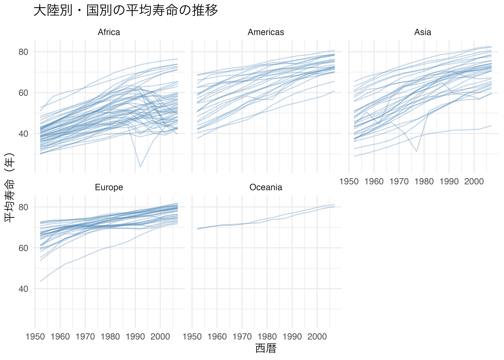
特定の国を強調する
多くの線がある中で特定の国を強調したい場合、 レイヤーを重ねる方法が有効です。
# アジアのデータを抽出
asia <- gapminder |>
filter(continent == "Asia")
# 日本のデータを別途抽出
japan <- asia |>
filter(country == "Japan")
# グラフを描く
ggplot() +
# 全アジア国の薄い線（背景）
geom_line(data = asia,
aes(x = year, y = lifeExp, group = country),
color = "gray70", alpha = 0.5) +
# 日本の線（強調）
geom_line(data = japan,
aes(x = year, y = lifeExp),
color = "red", linewidth = 1.5) +
geom_point(data = japan,
aes(x = year, y = lifeExp),
color = "red", size = 3) +
labs(
title = "アジア各国の平均寿命の推移（日本を強調）",
x = "西暦",
y = "平均寿命（年）"
) +
theme_minimal()- 1
- 全アジア国のデータを薄くグレーで描いて背景にする
- 2
- 日本のデータを赤く太くして前面に描く
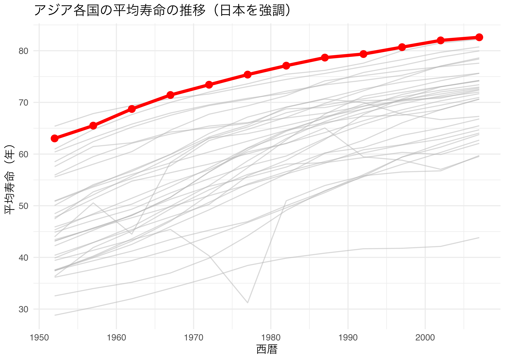
4.6 まとめ
本日学んだこと
3 種類のグラフと使い分け
| グラフ | 関数 | 主な用途 |
|---|---|---|
| 箱ひげ図 | geom_boxplot() |
連続変数の分布・グループ比較 |
| 散布図 | geom_point() |
2 つの連続変数の関係（相関） |
| 折れ線グラフ | geom_line() |
時系列データの推移 |
箱ひげ図のまとめ
| やりたいこと | 書き方 |
|---|---|
| 基本の箱ひげ図 | geom_boxplot() |
| 色を固定 | geom_boxplot(fill = "steelblue") |
| 変数で色分け | aes(fill = 変数名) |
| 中央値順に並べ替え | aes(x = reorder(変数, 値, median)) |
| 横向きにする | + coord_flip() |
| 外れ値の色を変える | geom_boxplot(outlier.color = "red") |
| 分割表示 | + facet_wrap(~ 変数) |
散布図のまとめ
| やりたいこと | 書き方 |
|---|---|
| 基本の散布図 | geom_point() |
| 色で変数を表現 | aes(color = 変数名) |
| サイズで変数を表現 | aes(size = 変数名) |
| 透過率を設定 | geom_point(alpha = 0.6) |
| 点をずらす（重なり解消） | geom_jitter(width = 0.2) |
| 線形回帰直線を追加 | + geom_smooth(method = "lm") |
折れ線グラフのまとめ
| やりたいこと | 書き方 |
|---|---|
| 基本の折れ線グラフ | geom_line() |
| 線の太さを変える | geom_line(linewidth = 1) |
| 点を重ねる | + geom_point() |
| 複数グループ（色分け） | aes(color = 変数名) |
| 複数グループ（色なし） | aes(group = 変数名) |
| 分割表示 | + facet_wrap(~ 変数) |
次回の予告
第 5 回では、データを地図上に可視化する方法を学習します。
- 日本地図・世界地図への色塗り
- 緯度・経度データを地図上に描く
4.7 演習問題
4.7.1 箱ひげ図
mpg データを使って、シリンダー数（cyl）別の排気量（displ）の 箱ひげ図を描いてください。 ただし、以下の条件を満たしてください。
- X 軸に
factor(cyl)（シリンダー数を因子型に変換）を使う fill = factor(cyl)でシリンダー数ごとに色を変える- X 軸ラベル：「シリンダー数」
- Y 軸ラベル：「排気量（リットル）」
- タイトル：「シリンダー数別の排気量分布」
- テーマ：
theme_minimal() - 凡例は非表示（
theme(legend.position = "none")）
mpg データを使って、車のクラス（class）別の市街地燃費（cty）の 箱ひげ図を描いてください。 ただし、以下の条件を満たしてください。
- 市街地燃費の中央値が大きい順に並べる（
reorder()を使う） coord_flip()で横向きにする- X 軸ラベル：「クラス」
- Y 軸ラベル：「市街地燃費（mpg）」
- タイトル：「クラス別の市街地燃費（中央値順）」
- テーマ：
theme_classic()
4.7.2 散布図
mpg データを使って、市街地燃費（cty）と高速道路燃費（hwy）の散布図を描いてください。 ただし、以下の条件を満たしてください。
color = classでクラスごとに色を変えるalpha = 0.6（透過率 60%）- X 軸ラベル：「市街地燃費（mpg）」
- Y 軸ラベル：「高速道路燃費（mpg）」
- タイトル：「市街地燃費と高速道路燃費の関係」
- 凡例タイトル：「クラス」
- テーマ：
theme_minimal()
mpg データを使って、排気量（displ）と市街地燃費（cty）の散布図を facet_wrap() を使ってシリンダー数別（cyl）に分割表示してください。 ただし、以下の条件を満たしてください。
- 各パネルに
method = "lm"の回帰直線を追加（se = FALSE） - X 軸ラベル：「排気量（リットル）」
- Y 軸ラベル：「市街地燃費（mpg）」
- タイトル：「シリンダー数別：排気量と市街地燃費の関係」
- テーマ：
theme_bw()
4.7.3 折れ線グラフ
gapminder データを使って、アメリカ（United States）・日本（Japan）・ドイツ（Germany） の一人当たり GDP（gdpPercap）の推移を折れ線グラフで描いてください。
ただし、以下の条件を満たしてください。
- 3 カ国のデータを
filter()と%in%で抽出する color = countryで国ごとに色を変える- 点（
geom_point()）も重ねて表示する - X 軸ラベル：「西暦」
- Y 軸ラベル：「一人当たり GDP（ドル）」
- タイトル：「一人当たり GDP の推移（米・日・独）」
- 凡例タイトル：「国名」
- テーマ：
theme_minimal()
gapminder データを使って、各大陸の人口合計（pop）の推移を折れ線グラフで描いてください。
ただし、以下の手順で実行してください。
group_by(continent, year)でグループ化するsummarise()で各大陸×年の人口合計（total_pop = sum(pop)）を計算するggplot()で折れ線グラフを描く（color = continent）- X 軸ラベル：「西暦」、Y 軸ラベル：「人口合計」
- タイトル：「大陸別の人口推移」
- テーマ：任意